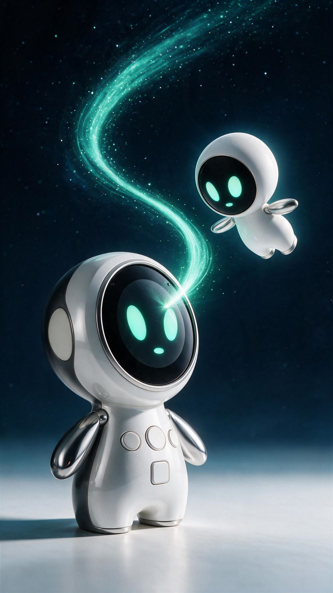
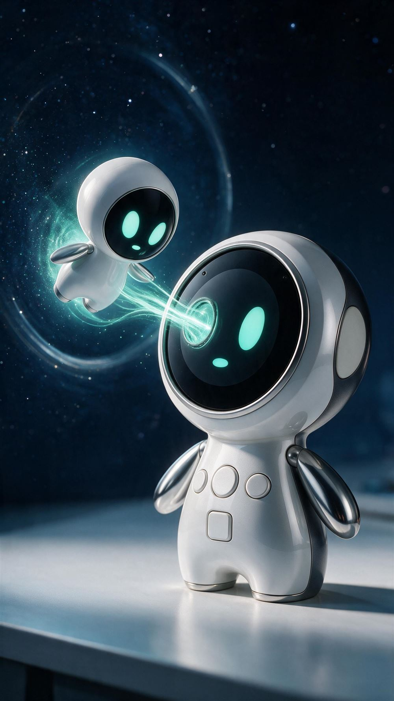
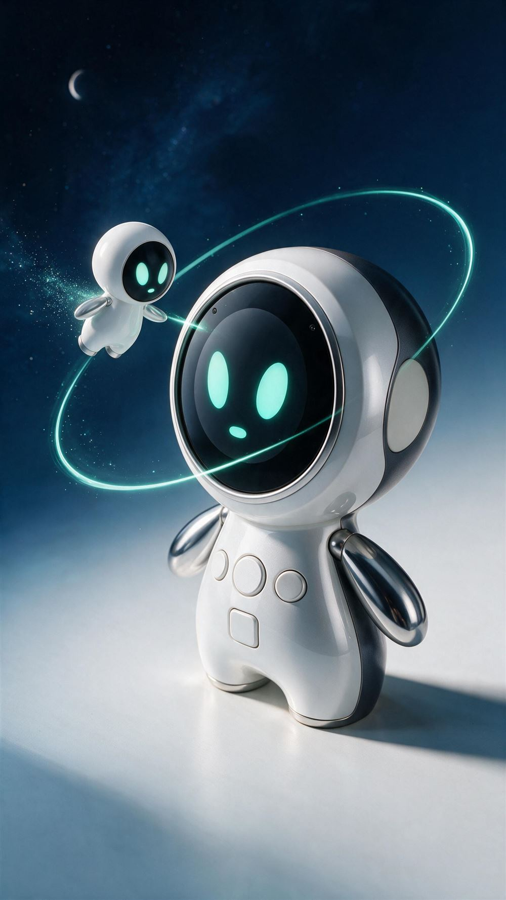
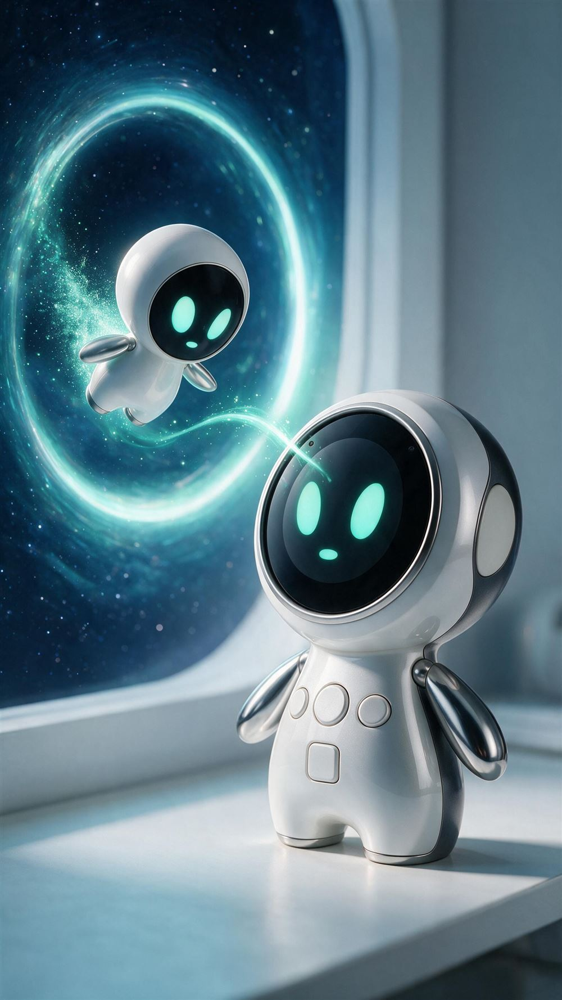
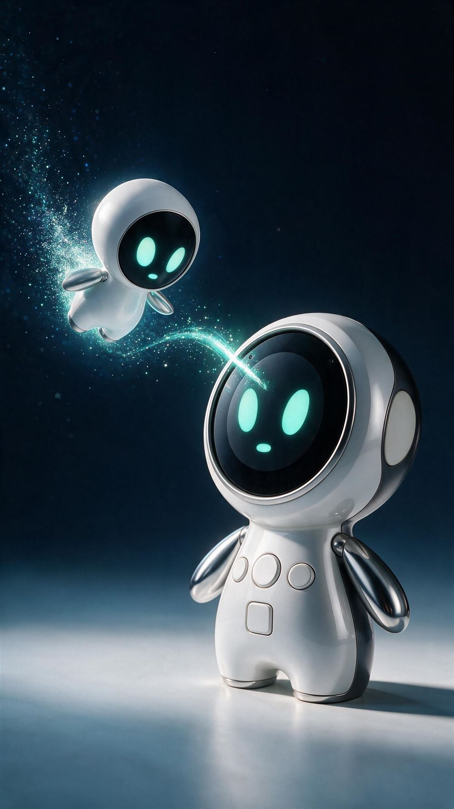

REFERENCE 1
혜성처럼 내려오는 민트
넓게 휘는 민트 궤적을 따라 디바이스로 급강하
개봉에서는 우리의 이야기를, 연결 중에는 네 친구의 성격을 만나세요.
온보딩 구성 V12 · V5 캐릭터 + Seedream 신규 장면 · 9:16 장면 기준
단계를 누르면 아래의 해당 이미지·대사 카드로 바로 이동합니다.
이미지를 누르면 원본을 크게 볼 수 있습니다. 개봉 보드 전체 보기 · 연결 보드 전체 보기 · 대사 정리본
빨리 끝나면 현재 친구의 문장을 마친 뒤 완료 화면으로 넘어갑니다. 남은 친구 소개는 캐릭터 선택 화면에서 다시 볼 수 있습니다. 소개가 끝나도 연결 중이면 네 친구가 작은 빛을 주고받으며 조용히 기다립니다. 대기 안내는 한 번만 말하고, 같은 소개를 계속 반복하지 않습니다.
전원 연결·QR 스캔·기다리며 노는 장면은 따능 Seedream 5 Pro로 새로 제작했습니다. 네 친구의 비행과 민트 단독 인사는 별도 컷으로 나눴습니다. 그림에 실제로 보이는 내용과 앞으로 추가할 움직임을 각 카드에 따로 적었습니다. QR은 이미지 연출용이며 실제 연결 코드는 앱에서 표시합니다. 케이블 연결은 연출 시안으로 실제 포트 구조를 확정하는 자료는 아닙니다.
앱 온보딩은 연결 준비 완료까지 안내합니다. 선택한 5번 “별빛이 되어 스며드는 민트”는 실제 디바이스로 이어지는 마무리 장면으로 사용합니다. 이후의 대화는 디바이스에서 진행합니다.
실제 디바이스 참조 보기 ↗전환 방식과 카메라 구도를 비교해보세요. 이미지를 누르면 원본을 엽니다.

넓게 휘는 민트 궤적을 따라 디바이스로 급강하

블랙 디스플레이에 열린 작은 빛의 문으로 진입

디바이스 주변을 궤도로 감싸며 부드럽게 들어감

우주와 책상 사이의 경계를 넘어오는 민트

작은 민트의 몸이 별 입자로 풀리며 화면으로 이어짐